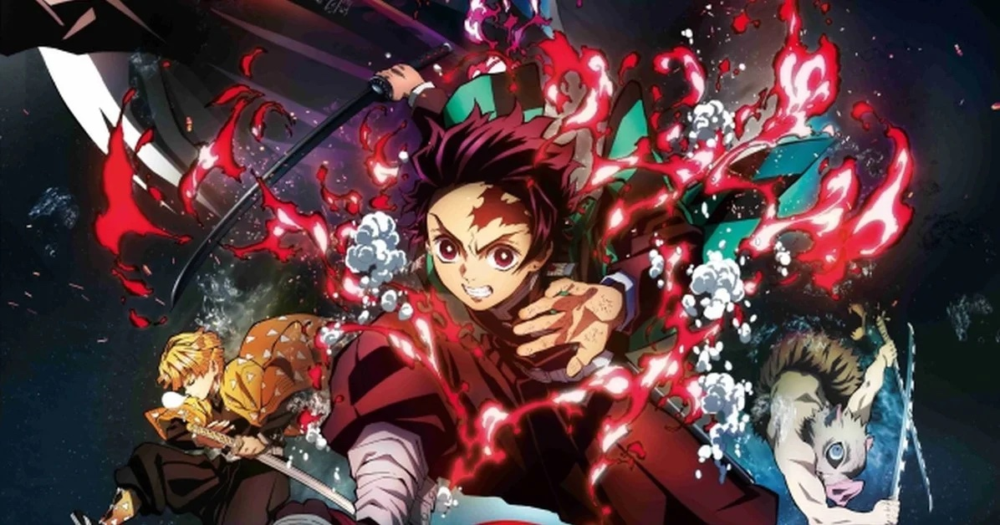

Top 3 : Kimetsu No Yaiba.
Depuis les temps anciens, il existe des rumeurs concernant des démons mangeurs d'hommes qui se cachent dans les bois. Pour cette raison, les citadins locaux ne s'y aventurent jamais la nuit. La légende raconte aussi qu'un tueur de démons déambule la nuit, chassant ces démons assoiffés de sang. Pour le jeune Tanjirou, ces rumeurs vont bientôt devenir sa dure réalité ...
Un jour Tanjirou découvre que sa famille s'est faite massacrer et que la seule survivante, sa sœur Nezuko, est devenue un démon.
Ainsi, commence la dure tâche de Tanjirou, celle de combattre les démons et de faire redevenir sa sœur humaine.